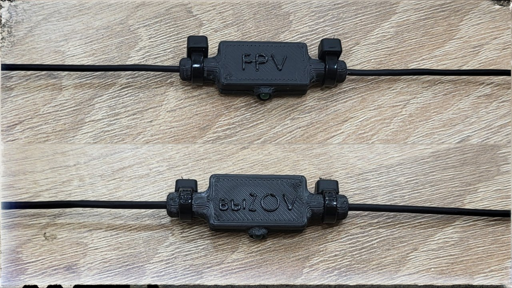
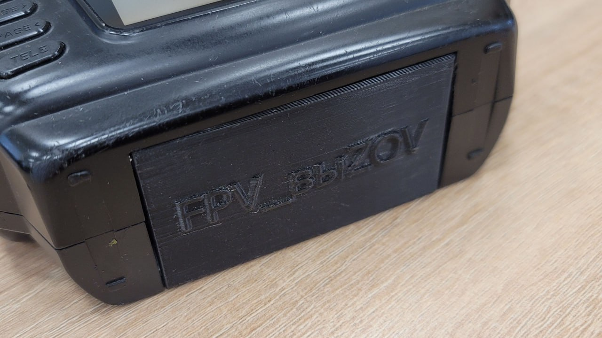
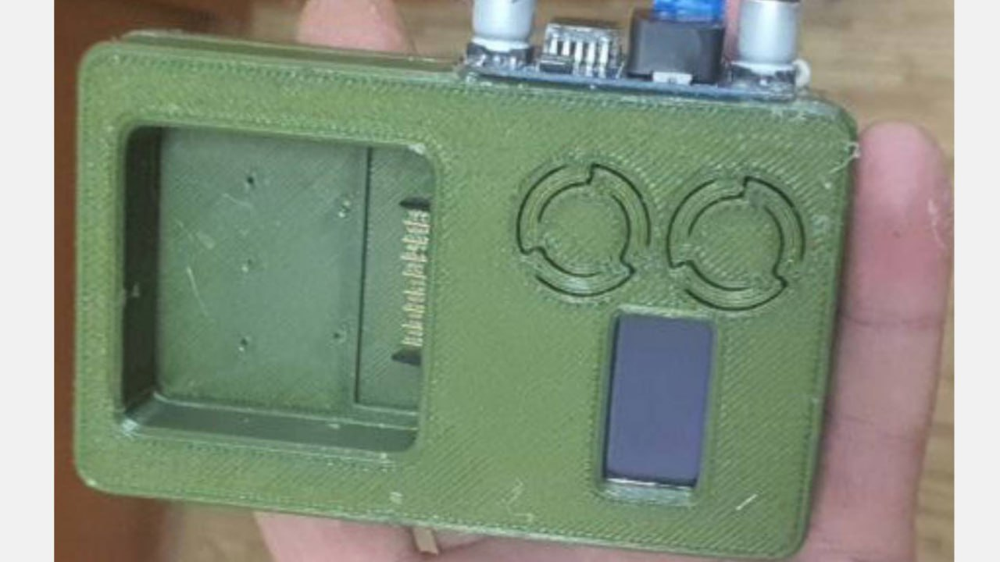
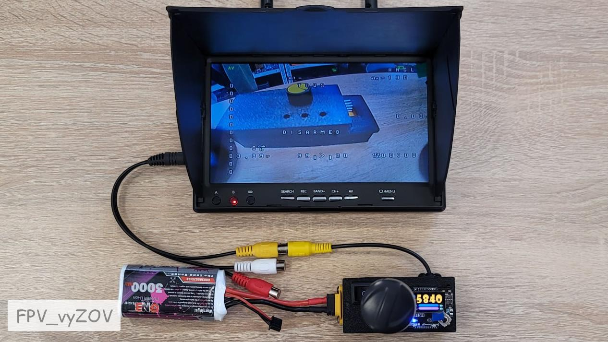
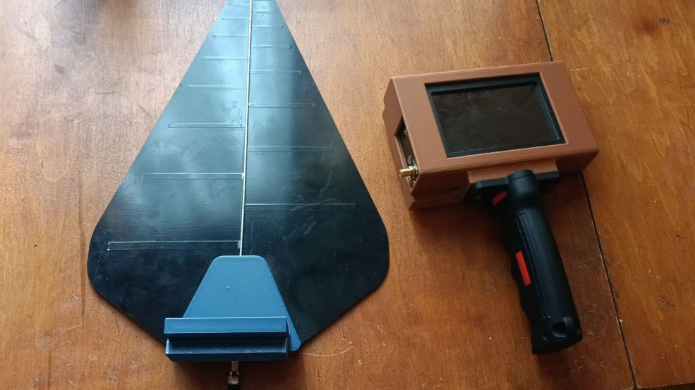
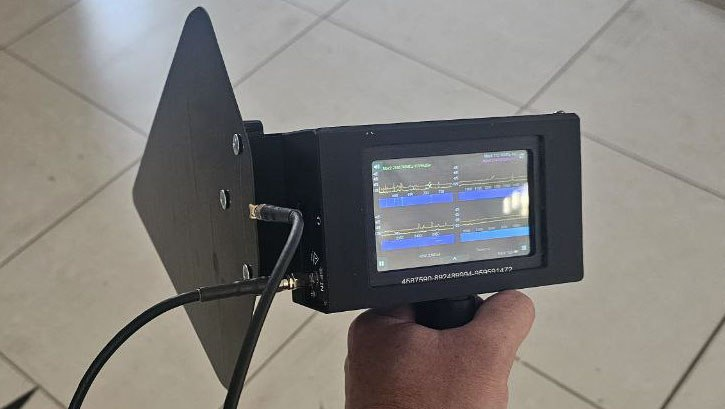
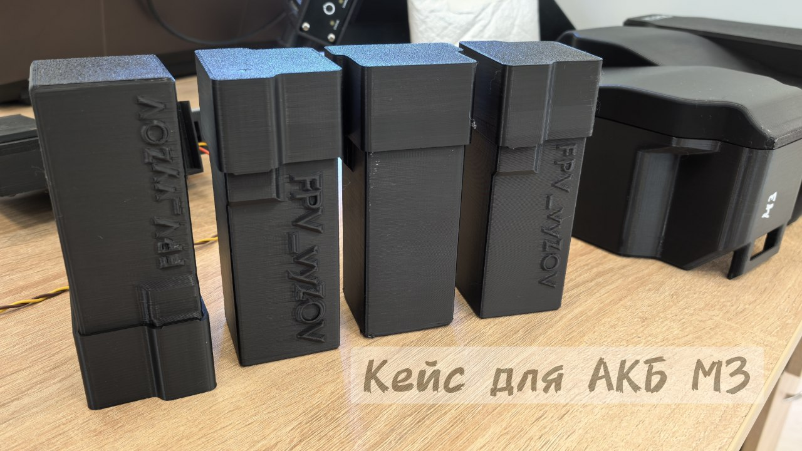

Детали для карманного РЭБ теста.
#3Д_для_периферийных_устройств
Это вложение из поста t.me/platforma_fpv/250/983
Хвостовик под передатчик 1,2 для Химеры
Держатель для видепередатчика 1,2ГГц (золотой) для дрона Chimera 7,5 Pro/9.
❔Когда нет 3Д-принтера - пилоты
для установки видеопередатчика.
#3Д_для_периферийных_устройств
Это вложение из поста t.me/platforma_fpv/250/1205

Держатель для GPS-трекера
.
Держатель для
.
* использовался для iFlight Chimera (7,5", 9" и 10").
⚡️Использование GPS-трекеров - отличное решение для школ БЛА и тестовых полетов на дальность.
ℹ️ Рекомендации по печати:
- рекомендуется печатать из TPU-пластика,
- можно печатать из PLA, но такой вариант выходит более хрупким и про падении большая вероятность того, что держатель сломается.
📎
#3D_МОДЕЛИ_ДЛЯ_ДРОНОВ
#gps_трекер
Это вложение из поста t.me/platforma_fpv/248/1519

Крышка батарейного отсека для пульта RadioMaster TX12
ℹ️ Замена оригинальной крышки батарейного отсека.
Дополнительно для установки понадобится 10-15 мм стальной по 2 мм проволоки. Ее нужно будет разрезать пополам и вставить в места крепления крышки к пульту.
✅ Нужная деталь для учебных центров_Ru.
📎
#3Д_для_периферийных_устройств
#Ремонт_Мастерская
#пульт
#техник_бпла
Это вложение из поста t.me/platforma_fpv/250/1286

Док-стация для восстановления АКБ DJI
Корпус док-станции для восстановления и разблокировки АКБ DJI Mavic 3.
#3Д_для_периферийных_устройств
#Ремонт_Мастерская
#техник_бпла
Это вложение из поста t.me/platforma_fpv/250/1472

Тестер для видеоприемников от Команды
ℹ️ Тестер для видеоприемников - устройство для подключения видеоприемников из очков к внешним экранам c аналоговым входом* (монитор, FPV-монитор, телевизор).
*Если устройство имеет только цифровой вход, то понадобится конвертер AV-HDMI.
Можно использовать при настройке и тестирования функции переключения каналов со стороннего источника (пульт).
Чтобы каждый раз не вставлять и вынимать приемник из очков, или когда нужно вывести изображение на большой экран (телевизор) не подключая очки целиком.
Пример использования:
, на фото видеоприемник упакован в данный тестер.
Для сборки понадобится:
- 1 шт.;
2. Разъем штыревой PBS-1x10L (2,54) - 1 шт.;
3. Разъем XT60E-M - 1 шт.;
AV-провод "тюльпан" мама или папа - 1 шт.
4. Кнопка двухпозиционная - 1 шт.;
5. Понижающий преобразователь напряжения - 1 шт.;
6. Винт М3х8 - 4 шт.
📎
#3Д_для_периферийных_устройств
#Ремонт_Мастерская
#техник_бпла
Это вложение из поста t.me/platforma_fpv/250/1582

Держатель для анализатора спектра Arinst и крепление для антенны "Мастерок"(c оригинальной ручкой)
.
ℹ️ В комплекте для печати ручки нет, на фото - оригинальная ручка от антенны "Мастерок".
✔️ Удобный держатель для анализатора спектра Arinst и антенны "Мастерок" позволяет соединить вместе антенну и анализатор, чтобы освободить руки.
Держатель состоит из двух деталей:
- корпус для анализатора спектра,
- крепление для антенны.
Крепление для антенны присоединяется к корпусу с помощью "ласточкиного хвоста".
Сам корпус можно закрепить на комплектной ручке антенны или на штативе.
ℹ️ Рекомендации по печати:
- деталь "крепление для антенны" рекомендуется печатать со 100% заполнением.
ℹ️ Рекомендации по сборке.
Для установки антенны на креплении необходимо:
- снять с антенны (в области разъема) крепление для ручки (открутить 3 самореза),
- приложить антенну к креплению,
- по отверстиям от саморезов просверлить в креплении отверстия (2 мм),
- зафиксировать антенну на креплении с помощью тех же саморезов или других (подходящих по размеру.
📎
при поддержке
#3Д_для_периферийных_устройств
#РЭР
#техник_бпла
Это вложение из поста t.me/platforma_fpv/250/1668

Держатель для анализатора спектра Arinst, РУЧКА и крепление для антенны "Мастерок".
Доработанная версия "
".
В комплекте добавлен макет ручки и доработан корпус под печатную ручку, рекомендуется тем, кто потерял "родную" ручку)))
ℹ️ Рекомендации по печати:
- деталь "крепление для антенны" рекомендуется печатать со 100% заполнением.
ℹ️ Рекомендации по сборке.
Для установки антенны на креплении необходимо:
- снять с антенны (в области разъема) крепление для ручки (открутить 3 самореза),
- приложить антенну к креплению,
- по отверстиям от саморезов просверлить в креплении отверстия (2 мм),
- зафиксировать антенну на креплении с помощью тех же саморезов или других (подходящих по размеру.
📎
при поддержке
#3Д_для_периферийных_устройств
#РЭР
#техник_бпла
Это вложение из поста t.me/platforma_fpv/250/1675

Кейс для АКБ (М3 всей серии).
Удобен для хранения и
переноски в рюкзаке
аккумуляторной батареи для DJI М3 (всей 3й серии).
Кейс будет особенно актуален
в дождь.
Еще будет полезно:
при поддержке
#3Д_для_периферийных_устройств
#АКБ
#DJI
#техник_бпла
Это вложение из поста t.me/platforma_fpv/250/1691
#3D_МОДЕЛИ_ДЛЯ_ДРОНОВ
➤ 3D модели для DJI
- Держатель для 5-ти аккумуляторов 21700 для DJI M3
➤ 3D модели для FPV
(АКБ, РЭБ, пульты и пр.)
Полезные ПО для 3Д специалиста
Невозможно отобразить содержимое https://t.me/platforma_fpv/1346/1450
Это вложение из поста t.me/platforma_fpv/248/1029
ВСЕ
#3Д_МОДЕЛИ_КАТЕГОРИИ_РАЗНОЕ
Не умею отображать вложенные ссылки на топики
Не умею отображать вложенные ссылки на топики
(пульты, РЭБ, РЭР, АКБ и пр.)
➤ Медицина
➤ Мастерская
➤ Отдых
Полезные ПО для 3Д специалиста
Невозможно отобразить содержимое https://t.me/platforma_fpv/1346/1450
Это вложение из поста t.me/platforma_fpv/252/712

Fast STL Viewer
ℹ️Приложение для мобильного - просматривать STL-файлы.
📎
(версия 2.19)
#программное_обеспечение
#для_android
Это вложение из поста t.me/platforma_fpv/16/1017
#3Д_для_периферийных_устройств
Детали для периферии
от Команды FPV_vyZOV;
-
(медицина, для мастерской и т.п.)
➤
Полезные ПО для 3Д специалиста
Невозможно отобразить содержимое https://t.me/platforma_fpv/1346/1450
Веб-страница создана автоматически на основе поста пользователя ПЛАТФОРМА_FPV